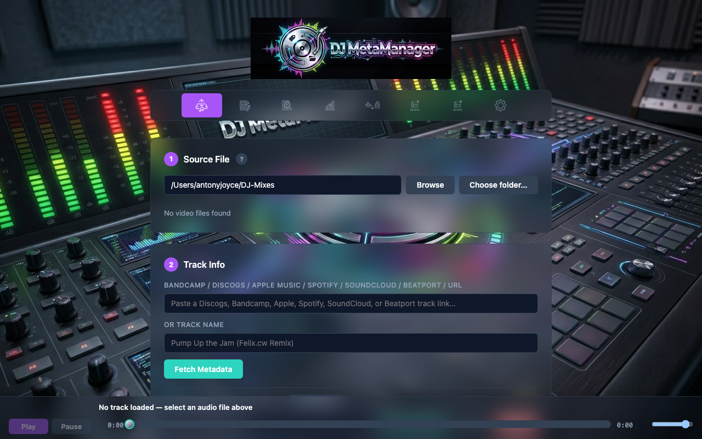

DJ MetaManager — User Guide
DJ MetaManager is a local web application for DJs and music librarians who work with recordings, club edits, and large format libraries. It helps you extract audio from video captures, measure and normalise loudness, fetch metadata and artwork from major music services, and write professional tags—without handing your library to a cloud service you do not control.

assets/images/01-nav-all-tabs.png (see assets/images/README.md).Who this guide is for
This guide is written for DJs, collectors, and technical users who manage FLAC, MP3, M4A/AAC, or WAV sources; who record via OBS or similar; and who want repeatable, documented tagging and loudness workflows. It is also suitable as customer-facing documentation if you distribute a packaged build—subject to your own licensing and support terms.
How the guide is organised (modular updates)
Chapters are separate HTML files in this folder. They share one stylesheet, assets/guide.css. To add a feature: edit the relevant chapter, add a figure under assets/images/, and register the filename in assets/images/README.md. The navigation block is duplicated at the top of each page; when you add a new chapter, copy the nav from partials/nav.inc.html and insert a new link in every file.
Contents
Install & first run
macOS requirements, Python, ffmpeg, configuration, starting the server.
Extract
From MKV/MP4/MOV to library-ready audio: meters, metadata, normalise, Platinum Notes.
Fix Metadata & Inspect
Per-file tagging, artwork URL & cover-only save, keyboard file selection, Inspect verification, shared audio preview bar.
Normalise
EBU R128 loudness targets, re-encode to your global extract format.
WAV → FLAC
Single and bulk conversion, batching, flat-folder handoff to Bulk Fix.
Bulk Fix
Batch metadata for many FLACs: scan, suggest, apply, duplicates, WAV hints.
Reference
Filename rules, formats, metadata sources, processing log, API overview, UI state.
Product positioning (distribution)
The open-source project is released under the MIT License (see the repository). If you offer DJ MetaManager—or a derivative—as a paid product, you remain responsible for compliance with that license, for third-party terms (e.g. Discogs API rules, store policies), and for how you describe features and support. This guide is factual documentation, not legal or commercial advice.